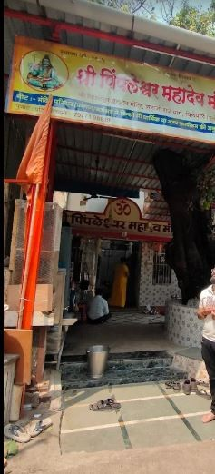

Parleshwar Mandir

Pimpleshwar Mandir
Parleshwar Mandir
The temple features a sprawling, clean courtyard and is divided into multi-deity sections:
• Lord Shiva: The main shrine houses a Swayambhu (self-manifested) Shiva Linga, accompanied by an idol of Goddess Uma (Parvati) right behind it.
• Lord Ganesha: A primary attraction within the complex, featuring a large, beautiful alloy-based Ganesha idol that captures great devotion from locals.
Timings:
• Morning Darshan: 5:30 AM to 12:00 PM
• Evening Darshan: 3:30 PM to 10:00 PM
• Evening Aarti: 7:30 PM.
Location Map & Navigation
Click the button below to view this temple directly on Google Maps and get instant driving or walking directions:
📍 Open Map & Get DirectionsPimpleshwar Mandir
The temple has served as a central community cornerstone for over 60 years. Alongside the primary deity Lord Shiva, it also houses a shrine for Lord Shanishwar (Shani Dev). Devotees highly revere it for its peaceful spiritual energy and powerful presence during standard rituals.
Timings:
• Darshan timing: 5:00 AM to 10:00 PM every day
• Morning Aarti: 6:30 AM to 7:00 AM
• Evening Aarti: 7:00 PM to 7:30 PM
Location Map & Navigation
Click the button below to view this temple directly on Google Maps and get instant driving or walking directions:
📍 Open Map & Get Directions